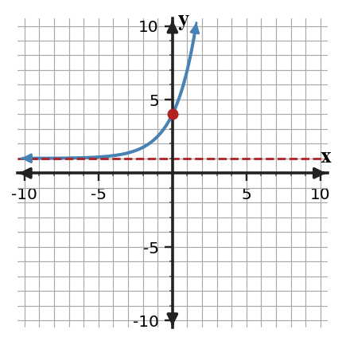
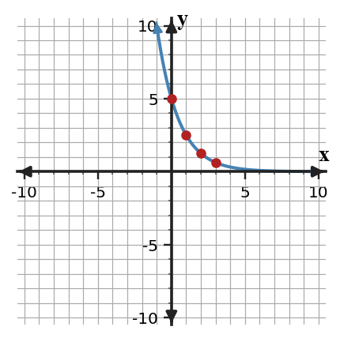
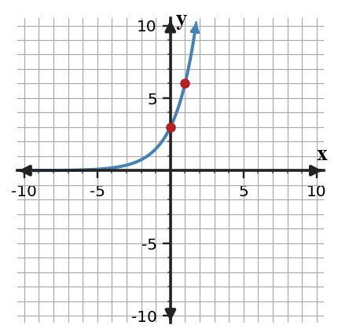

Graphing and Analyzing Exponential Functions
Mathematical idea: An exponential graph is shaped by its starting value, multiplier, and horizontal asymptote.
Today you will connect equations, tables, and graphs of exponential functions. You will identify y-intercepts, long-run behavior, and mistakes in graph features.
Learning Target
Learning Target: Students will graph exponential functions and analyze key features.
I can statements
- I can design graphs of exponential functions using key points, growth or decay factors, and asymptote behavior.
- I can apply key features of exponential graphs to interpret domain, range, intercepts, and end behavior.
- I can assess whether a graph is reasonable for an exponential equation or situation.
What's To Come
This is a long-range preview for future lessons. Do not solve it today. Instead, annotate it individually. Circle anything familiar, underline symbols or directions that seem important, and write notes about what information you think will be needed later.
As you annotate, ask yourself: What parts (words, symbols, graphs) do you KNOW? What parts look FAMILIAR? What parts look like jibberish?
A student graphs $f(x)=3(2)^x+1$ with y-intercept 3 and asymptote $y=0$.
- Revise the graph features so they match the equation.
- Explain how the +1 changes both the y-intercept and asymptote.
Intro
Directions
Read the introduction aloud with a partner or in a small group. As you read, annotate the text by highlighting important ideas, circling key vocabulary, and writing short notes about connections, questions, or predictions in the margins.
Graphs give a visual way to check an exponential equation. The y-intercept comes from the output when $x=0$, so it should match the starting value or the shifted starting output.
Many exponential graphs get close to a horizontal line over time. That horizontal asymptote describes the value the graph approaches but does not cross in the long-run direction being considered.
A table, graph, and equation should tell the same story about the same function. If one representation gives a different output for the same input, then at least one representation needs to be revised.
In this section, you will use coordinate graphs, tables from equations, key points, domain and range, and end behavior. These features help you decide whether a graph is reasonable.
In real situations, an asymptote can represent a lowest possible amount, a baseline, or a long-run limit. The graph should match that meaning, not just the shape of a curve.
Stop and Discuss
- What point gives the y-intercept of an exponential function?
- What does a horizontal asymptote describe?
- Why should a graph, table, and equation agree with each other?
To graph an exponential function, make a table, plot key points, and describe the horizontal asymptote.
| $x$ | -1 | 0 | 1 | 2 |
|---|---|---|---|---|
| $y=2(2)^x$ | 1 | 2 | 4 | 8 |
The y-intercept is $(0,2)$, and the graph approaches $y=0$ as $x$ goes left.

Context: If $x$ is time, the y-intercept tells the amount at time 0.
Example 1: Read Intercepts and Long-Run Behavior
For each equation, identify the y-intercept and describe whether the graph approaches the x-axis from above as $x$ increases or grows away from it.
| Equation | y-intercept | Long-run behavior |
|---|---|---|
| $f(x)=6(0.5)^x$ | ||
| $g(x)=3(2)^x$ | ||
| $h(x)=4(0.75)^x$ |
- Complete the table.
- Which functions show decay as $x$ increases?
- Explain how the multiplier helps you decide.
You Try It 1: Read More Graph Features
For each equation, identify the y-intercept and describe the long-run behavior.
| Equation | y-intercept | Long-run behavior |
|---|---|---|
| $p(x)=7(0.25)^x$ | ||
| $q(x)=5(1.6)^x$ | ||
| $r(x)=9(0.8)^x$ |
- Complete the table.
- Which functions show growth as $x$ increases?
- Explain how the multiplier helps you decide.
Stop and Discuss
- Which graph feature did you use first in the Example and YTI?
- How did the table help check the graph or equation?
Example 2: Graph from a Table
Graph $y=2(3)^x$ using a table of at least five points.

- Make a table using $x=-2,-1,0,1,2$.
- Sketch the graph and label the y-intercept.
- State the horizontal asymptote.
You Try It 2: Graph a Decay Function
Graph $y=5(0.5)^x$ using a table of at least five points.
- Make a table using $x=-2,-1,0,1,2$.
- Sketch the graph and label the y-intercept.
- State the horizontal asymptote.
Stop and Discuss
- Which graph feature did you use first in the Example and YTI?
- How did the table help check the graph or equation?
In $f(x)=a(b)^x+k$, the value $k$ shifts the graph and changes the horizontal asymptote to $y=k$.
For $f(x)=3(2)^x+1$, the y-intercept is $f(0)=3(1)+1=4$.
| Feature | Value |
|---|---|
| Multiplier | 2 |
| y-intercept | $(0,4)$ |
| Horizontal asymptote | $y=1$ |

Context: A shift of 1 can represent a baseline amount that remains even after the exponential part changes.
Example 3: Describe End Behavior from a Shifted Table
Use $y=8(0.5)^x+1$ to build a table and analyze the graph.
- Make a table for $x=-2,-1,0,1,2$.
- Describe the end behavior in words.
- Identify the horizontal asymptote and explain how the +1 affects it.
You Try It 3: Analyze Another Shifted Decay
Use $y=4(0.5)^x+2$ to build a table and analyze the graph.
- Make a table for $x=-2,-1,0,1,2$.
- Describe the end behavior in words.
- Identify the horizontal asymptote and explain how the +2 affects it.
Stop and Discuss
- Which graph feature did you use first in the Example and YTI?
- How did the table help check the graph or equation?
Example 4: Find a Representation Mismatch
The table and graph are supposed to show $f(x)=5(0.5)^x$. One representation has a deliberate error.
| $x$ | 0 | 1 | 2 | 3 |
|---|---|---|---|---|
| $f(x)$ | 5 | 2.5 | 1.5 | 0.625 |

- Identify which representation is inconsistent.
- Explain where the mismatch first appears.
- Revise the incorrect value or feature.
You Try It 4: Check Growth Representations
The table and graph are supposed to show $g(x)=3(2)^x$. One representation has a deliberate error.
| $x$ | 0 | 1 | 2 | 3 |
|---|---|---|---|---|
| $g(x)$ | 3 | 6 | 10 | 24 |

- Identify which representation is inconsistent.
- Explain where the mismatch first appears.
- Revise the incorrect value or feature.
Stop and Discuss
- Which graph feature did you use first in the Example and YTI?
- How did the table help check the graph or equation?
Summary
You can analyze an exponential graph by connecting its equation, table values, y-intercept, and asymptote.
The y-intercept comes from $x=0$, and a vertical shift changes the horizontal asymptote from $y=0$ to $y=k$.
A common error is to forget that a + or - outside the exponential changes graph features, not the multiplier.
Strong understanding means you can revise a graph or table when one representation does not match the equation.
Common Mistakes
- Forgetting the shift. Why it is tempting: the parent graph is familiar. What to check instead: check for an added $k$ outside the exponential.
- Mislabeling the y-intercept. Why it is tempting: students may use $a$ only. What to check instead: evaluate the full expression at $x=0$.
- Treating the asymptote as a point. Why it is tempting: the graph gets close to it. What to check instead: describe it as long-run behavior.
- Plotting too few points. Why it is tempting: a curve cannot be seen from one point. What to check instead: use at least five points when sketching.
- Accepting mismatched representations. Why it is tempting: tables and graphs both look plausible. What to check instead: check the same input in every representation.
Optional Future Task Reflection
Look back at the future task. Do not solve it yet. Highlight one part that makes more sense now than it did at the beginning. Circle one part that still feels unfamiliar. Write one sentence about what representation you would look at first.
For each equation, identify the y-intercept and decide whether the graph approaches the x-axis from above or below as x increases.
| Equation | y-intercept | Long-run behavior |
|---|---|---|
| $f(x)=4(0.5)^x$ | ||
| $g(x)=2(3)^x$ | ||
| $h(x)=8(0.8)^x$ |
Graph $y=3(2)^x$ on the blank coordinate plane using at least five points. Then state the y-intercept and horizontal asymptote.

What is one idea about graphing and analyzing exponential functions you understand better now than at the start of class? Write at least one complete sentence.
What is one thing about graphing and analyzing exponential functions you still want to understand or practice? Be specific — name the idea, not just "everything."